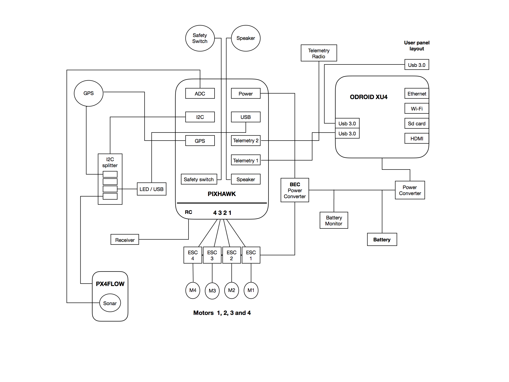

GAPTER: Gapter Brain and Internal Hardware Connection¶
This tutorial provides an overview about the internal hardware connection of Gapter and the different components of the Gapter brain.
Note
In this tutorial you will learn how to:
- the anatomy of the Gapter brain
- the components of the Gapter brain
- the connections between the different components of the brain
For any query, please feel free to post your questions in the Gaitech EDU Forum
Gapter Brain Overview¶
The following image provides the schema of internal harwarde components and connections of the Gapter Brain.
{kind=link}
The Gapter Brain is composed of the Pixhawk autopilot hardware as drone controller, and the Odroid XU4 as single board computer provding additional onboard processing functionalities.
The Pixhawk contains all the required navigation and flight control sensors and uses Ardupilot autpilot software to control the drone. Odroid XU4 single board computer extends the capabilities of Gapter by providing oboard computing and storage capabilities. It allows Gapter to be connected to the Internet. In addition, it host Robot Operating System (ROS) framework, which allows the user to develop onboard ROS program to control the drone and develop specific applications. Furthermore, DroneKit framework and MAVProxy are also installed on XU4 which provides another alternative to interact and develop programs for Gapter.
The Gapter Brain provide unique functionalities to develop vast array of applications and programs for drones.
Hardware Connections¶
The following table present the internal hardward connections of the Gapter brain.
| Connection Number | components | Connection between | pins connecting | No. of Description |
|||
|---|---|---|---|---|---|---|---|
1 px4flow pixhawk |
to ADC of pin slot | Sonar of | used in 3 | Two pins | 4 pins but only two pins are used. So 2 wires connecting between them. | Sonar connecting from px4flow to ADC of Pixhawk. Connecting slot contains | |
2 splitter |
to I2C pin slot | I2C of px4flow | used in 4 | Four pins | are used. So 4 wires connecting between them. | I2C of px4flow sensor connecting to I2C of pixhawk via I2c splitter. Four pins | |
| 3 | splitter pin slot | GPS to I2C | used in 4 | Two pins | I2C splitter. Two pins are used , so 2 wires connecting between them | GPS consists of two connecting wires. One connected to I2C of pixhawk via | |
4 pixhawk |
slot of 6 pin slot | GPS to GPS | used in | 4 pins are | in 6 pin slot. Hence 4 wires are connecting between them | The other wire of GPS is connected to GPS slot of pixhawk. Four pins are used | |
5 splitter |
I2C pin slot | LED/USB to | used in 4 4 pins are used and so 4 connecting wires are used. | 4 pins are | two connecting wires. One wire is connected to pixhawk I2C via I2C splitter. | It LED/USB is the extension of pixhawk USB and LED notification. It consists of | |
6 splitter |
I2C to I2C pin slot | Pixhawk’s | used in 4 this extension. 4 pins are used hence 4 wires are connecting between them | 4 pins are | pixhawk which are depending on I2C channel. We connect GPS and px4flow to | It is an extension of I2C’s of pixhawk allowing more components to connect | |
7 usb to extension |
usb pin slot | Pixhawk’s | used in 4 are connecting between them | 4 pins are | pixhawk serial USB port to USB extension. 4 pins are being used. Hence 4 wires | The other connecting wire of pixhawk’s USB extension is connected between | |
8 pixhawk’s channel |
receiving pin slot | Receiver to | used in 3 | 2 pins are | 2 wires are used in 3 pin slot. Hence two wire are used. | This is connecting between RC receivers to pixhawk’s RC connecting slot. | |
9 to safety of pixhawk |
switch slot pin slot | Safety switch | used in 3 | 3 pins are | 3 pins are used in 3 pin slot. Hence 3 wires are connecting between them | This is connecting between safety switch to safety switch slot of pixhawk. | |
10 connecting to speaker slot |
pixhawk pin slot | Speaker | used in 2 between them. | 2 pins are | are used to connect in 2 pin slot. Hence 2 wires are used in connecting | This is connecting between speaker module to speak slot of pixhawk. 2 pins | |
11 pixhawk |
channel of pin slot | ESC to serial | respectively. Each ESC connecting to each channel where 2 pins are used used in 3 Totally 8 wires are connecting between all ESC to pixhawk. Among them 4 wires are connected to negative terminal of channel slot. | 2 pins are | among 3 pins of each slot of channel. Hence each ESC occupying 2 wires. | ESC 1,2,3,4 are connecting between serial channels of pixhawk 1,2,3,4 | |
| 12 | pin slot | ESC to motor used in 3 | Totally of 12 wires are being used to connect motors and ESC. | 3 pins are uses 3 pins of esc and hence each motor connecting 3 wires between them. | Motors 1,2,3 and 4 connecting to ESC 1,2,3 and 4 respectively. Each motor | ||
13 pixhawk |
used converter of | ESC to powe | 4 positive and 4 negative wires are connecting. | 8 wires source is connected to ESC and pixhawk power module in parallel. |
ESC is powered from power module of pixhawk where power from main | ||
14 pixhawk converter |
used in to power of pixhawk |
Power slot of | 6 pin slot | 6 wires | is sourced from battery. 6 wires are used to connect between them | Power is supplied to pixhawk from power converter of pixhawk which | |
| 15 | used in | Pixhawk to xu4 6 pin slot |
are being used in 6 pin slot. | 4 wires connect pixhawk’s telemetry port 1 to usb ttl connecting to xu4’s usb. 4 wires |
This is to make communication between pixhawk and xu4. A usb-ttl is used to | ||
| 16 to radio | used in | Telemetry 2 6 pin slot |
6 wires used in 6 pin slot |
This is to connect between telemetry port 2 to telemetry radio. 6 wires are | |||
| 17 | converter | Xu4 to power | +ve and –ve are being used. | 2 wires which converts power to 5V, 4A is used to supply power to xu4. Two wires | This is to power xu4 form battery via power converter. A power converter | ||
| 18 extension | Xu4 Usb 3.0 | Usb wire | This is the usb 3.0 extension cable used to connect 3D sensor | ||||
19 pixhawk |
battery to power converter |
Power wire from | Two wires wires +ve and –ve are connected to this module |
This is to supply power form battery to power converter of pixhawk. Two | |||
| 20 | battery to xu4 power converter | Power wire from | Two wires +ve and – ve are connected to this module |
This is to supply power form battery to power converter of xu4. Two wires | |||
| 21 | battery monitor | Battery to | Two wires connected to this module | This is to connect battery moniter to battery. Two wires +ve and –ve are | |||
| 22 | power switch | Battery to | One wire power. A +ve wire is connected to switch from battery. | This is to connect power switch from battery to switch and passing overall |